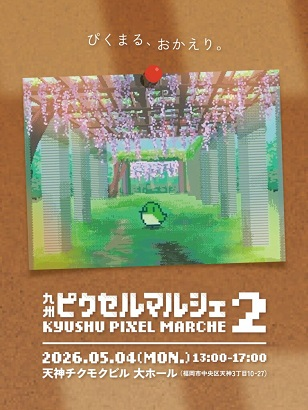
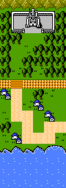
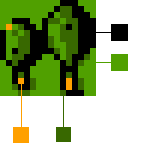

九州ピクセルマルシェ出展日記 - 01
2025年4月18日
音楽、ドット絵
九州ピクセルマルシェ2に出展します
かぶとやもどきさん(@kabutoyamodoki)主催のドット絵・ピクセルアートイベント「九州ピクセルマルシェ2」が2026年5月4日（月祝）に福岡県の天神で開催されます。

このイベントではドット絵・ピクセルアートに関わる作品（音楽含む！）を出展することができるということで、人生初のイベント出展として音楽を販売しようと決意しました。
知り合いに「こういうイベントがあるよ～」と話したところ、「出なよ」と言ってくれたことが非常に大きいです。その言葉が無かったら出展していないですね。感謝。
作品
音楽を販売するとはいっても、形の無いものだけを頒布するのはなかなか難しそう。そこで物理的なもの（栞）を配布し、そこに記載された二次元コードからリンク先に飛ぶと音楽を購入できるという形にしようと思い立ちました。 栞にした理由としては、手に取りやすく実用性があるものとして最初に思い立ったのがそれだったためです。
栞
- 2種類
- おもて面にドット絵。ファミコンの色数に制限
- 裏面に二次元コード（音楽の販売サイトへリンク）
- サイズや紙、枚数どうしましょう
音楽
- 10曲前後
- ファミコンやゲームボーイ風、いわゆるチップチューン
- 同時発音数4音までに制限。矩形波×2、三角波、ノイズの計4音、または矩形波×3、ノイズの計4音
- 「オープニング」「町」「戦闘」など実際のゲームを想定して作曲
こういう感じですね。
栞については本当に何をどうしたらよいのか分からな過ぎて手さぐり足さぐり、です。
音楽については過去に自分が作った曲だとこういったものが上記の条件に当てはまります。
栞を作っていく
音楽がファミコン風なので栞もファミコンしばりのパレットで描いていきます。

RPGのマップをイメージ。
1マスについては16×16で、色数も4色までに制限しています。

例えば森はこの4色。
曲を作っていく
とりあえずイメージを膨らませるために音を出してみます。
▼これはRPGのフィールドのイメージ。少し哀しみもありますね。続きどうしましょうね。
▼これは戦闘曲。緊迫感のある感じになっているのではないでしょうか。
それでは今後も進捗を載せていきますね。